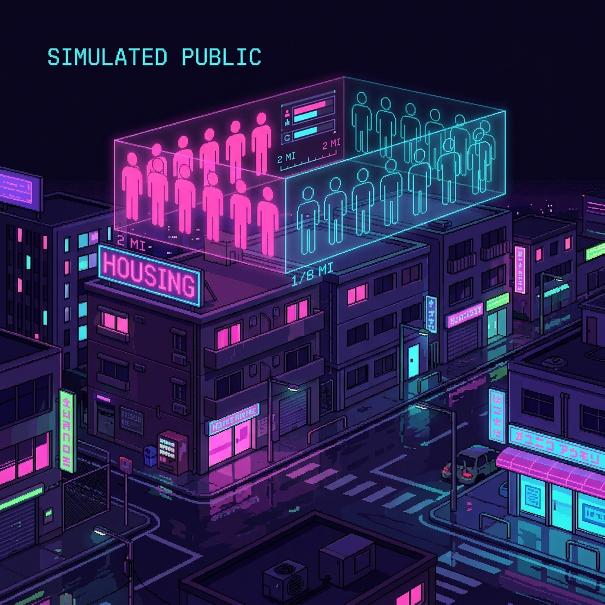

Can Large Language Models Represent Urban Publics? Behavioral Replication and Population Mismatch in an Affordable-Housing Experiment

Abstract
There is growing interest in using large language models as low-cost proxies for resident attitudes in urban planning. Earlier work shows LLMs can predict the average result of a survey experiment; what is less clear is whether they preserve the spatially anchored, identity-conditioned structure behind that average — how support shifts as a project moves closer to home, and how that response divides across tenure and partisan groups. We compared eight open-weight LLMs against 843 respondents in a US affordable-housing survey experiment, testing whether they reproduced the owner–renter difference in support as a proposed development moved from 2 miles to 1/8 mile.
Approach
Qwen 2.5 14B came closest (−0.242 against the human −0.285) and was the only model to meet the prespecified ±0.20 equivalence criterion; Phi-4 14B was directionally aligned but attenuated (−0.150), while other models were weak, null, or reversed. That aggregate match masked structural failure: Qwen attenuated the Republican contrast and exaggerated the Independent one, RMSE across 27 party-by-tenure-by-item cells was 0.613, the median model-to-human variance ratio was 0.099, and question order shifted the contrast by +0.367. Rationale-first responses differed from matched direct-choice responses in 20.6–35.3% of focal comparisons. A model can therefore approximate one aggregate contrast while failing to preserve the population structure, within-group heterogeneity, and measurement stability that generate it — so evaluation in urban planning should test whether this spatial and social structure survives simulation, not only average effects.